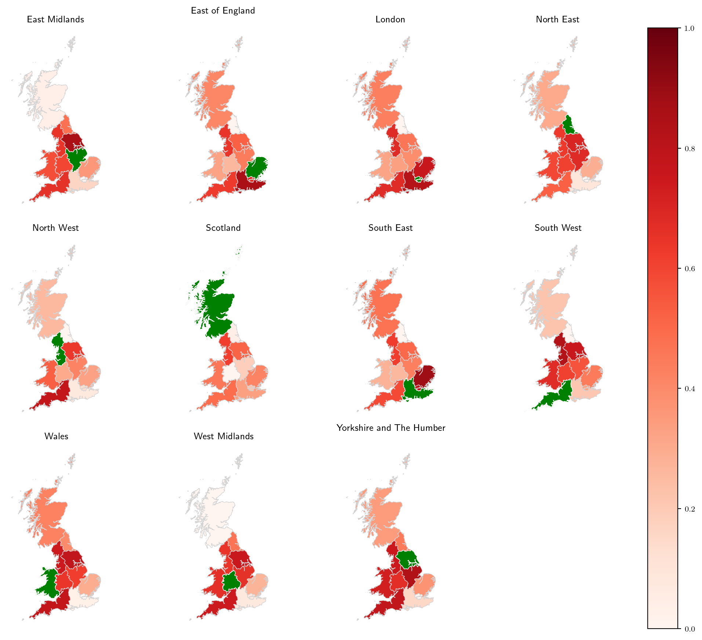
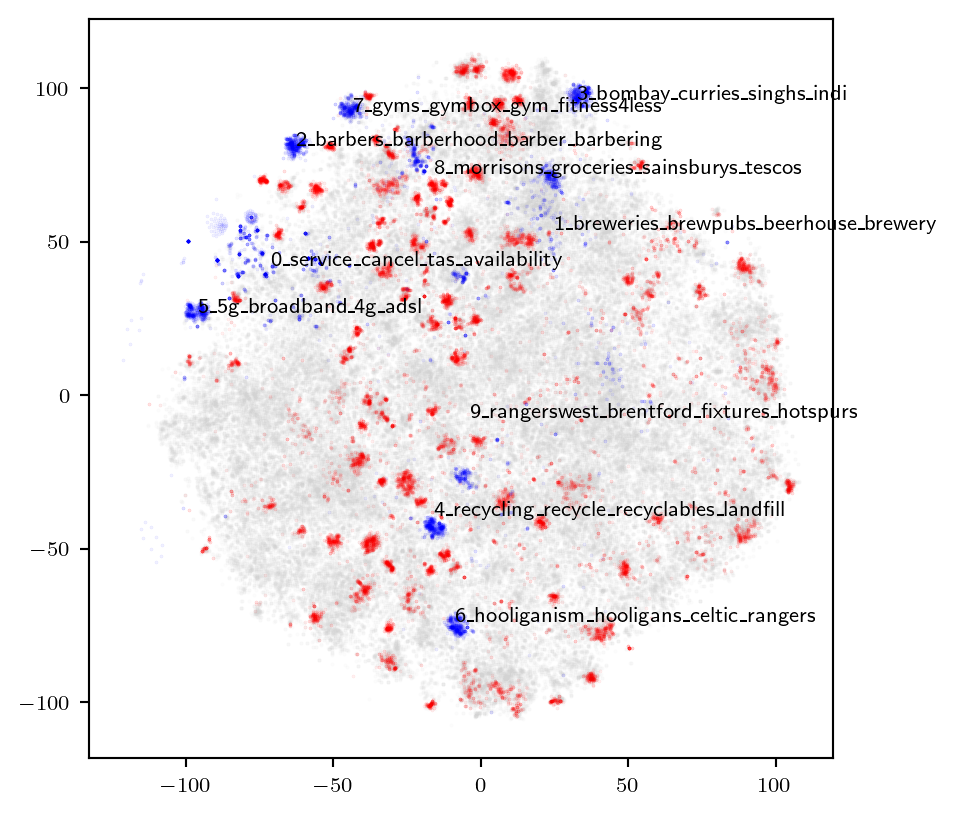
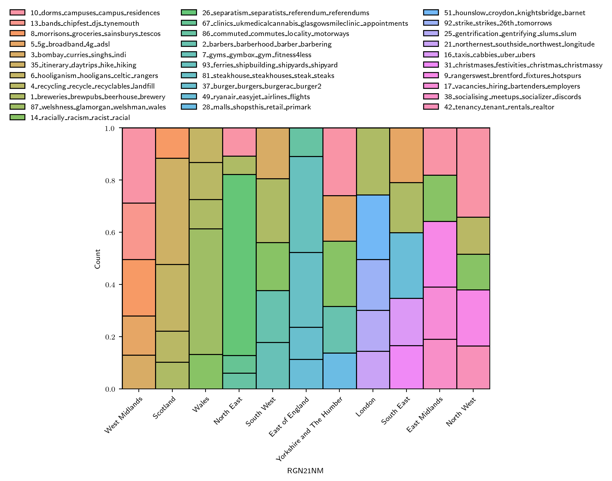

/home/cjber/drive/phd/papers/reddit-footprint/.direnv/python-3.10.10/lib/python3.10/site-packages/geopandas/_compat.py:124: UserWarning:
The Shapely GEOS version (3.11.1-CAPI-1.17.1) is incompatible with the GEOS version PyGEOS was compiled with (3.10.4-CAPI-1.16.2). Conversions between both will be slow.
/tmp/ipykernel_208469/930036015.py:4: DeprecationWarning:
Shapely 2.0 is installed, but because PyGEOS is also installed, GeoPandas still uses PyGEOS by default. However, starting with version 0.14, the default will switch to Shapely. To force to use Shapely 2.0 now, you can either uninstall PyGEOS or set the environment variable USE_PYGEOS=0. You can do this before starting the Python process, or in your code before importing geopandas:
import os
os.environ['USE_PYGEOS'] = '0'
import geopandas
In the next release, GeoPandas will switch to using Shapely by default, even if PyGEOS is installed. If you only have PyGEOS installed to get speed-ups, this switch should be smooth. However, if you are using PyGEOS directly (calling PyGEOS functions on geometries from GeoPandas), this will then stop working and you are encouraged to migrate from PyGEOS to Shapely 2.0 (https://shapely.readthedocs.io/en/latest/migration_pygeos.html).
Generating the Semantic Footprint of Regions in Great Britain
Cillian Berragan ![]()
Abstract
Social interaction is typically studied from the context of physical movement, where geographic distance and ease of connectivity influence the strength of interaction between regions. From the point of view of social media networks however, these limitations appear to still persist, despite interactions not being reliant on physical movement, suggesting non-physical geographic characteristics influence interaction between social communities. Unlike geotags, which provide explicit geographic information about social media users as coordinates, unstructured text presents an alternative perspective for the study of social interaction between regions. This text instead allows for the comparison between the language used when mentioning locations in context. Our paper analyses the corpora associated with major cities across the UK, first vectorising Reddit comments through transformer-based embeddings, which capture semantic information, then using these to establish unsupervised clusters and similarity between them. We find that distinct groups emerge which broadly conform with established regional identities of locations across the UK, but with interesting deviations.
1 Introduction
Social interaction is typically studied in the context of mobility, using data sources like Census or transport records, where physical movement is restricted by distance and ease of connectivity between two locations (Rae 2009; Titheridge et al. 2009). In contrast to this, social interaction has also been studied using phone call data (Sobolevsky et al. 2013), and social media networks (Lengyel et al. 2015), where the spatial and temporal bounds of connectivity between two locations does not restrict interactions. Despite this however, many studies have found that geographic identities within communities still persist in these networks, with interaction strength influenced by the geographic distance between them (Arthur and Williams 2019; Ratti et al. 2010).
Social media also presents rich semantic information regarding locations through text associated with geotagged social media posts. Comparative analysis of corpora associated with geotagged locations similarly exhibit regionality; for example, tweets from the North East of England are statistically different compared with the South (Arthur and Williams 2019).
Our paper explores the similarity of corpora with respect to locational mentions from data taken directly from text, without relying on geotagged metadata. This approach offers an alternative perspective for the analysis of social interaction, built directly from the semantic information associated with locations, rather than the location associated with social media users themselves. Collective semantic information from social media embeds the regional identity of locations across a continuous spectrum, allowing for the direct comparison between these identities and their relationships.
2 Methodology
The following section gives an overview of our data source and the data processing methodology used in our paper. All code, analysis and data are available on our DagsHub repository.
Reddit is a public discussion, news aggregation social network, among the top 20 most visited websites in the United Kingdom. As of 2020, Reddit had around 430 million active monthly users, comparable to the number of Twitter users (Murphy 2019; Statista 2022). Reddit is divided into separate independent subreddits each with specific topics of discussion, where users may submit posts which each have dedicated nested conversation threads that users can add comments to. Subreddits cover a wide range of topics, and in the interest of geography, they also act as forums for the discussion of local places. The United Kingdom subreddit acts as a general hub for related topics, notably including a list of smaller and more specific related subreddits. This list provides a ‘Places’ section, a collection of local British subreddits, ranging in scale from country level (/r/England), regional (/r/thenorth, /r/Teeside), to cities (/r/Manchester) and small towns (/r/Alnwick). In total there are 213 subreddits that relate to ‘places’ within the United Kingdom1. For each subreddit, every single historic comment was retrieved using the Pushshift Reddit archive (Baumgartner et al. 2020). In total 8,282,331 comments were extracted, submitted by 490,535 unique users, between 2011-01-01 and 2022-04-17.
We extracted and geolocated all place names in this collection of comments using a custom-built geoparsing pipeline. To identify place names, we used a BERT transformer-based NER model trained on the WNUT 2017 dataset (Derczynski et al. 2017), available on the HuggingFace Model Hub. We then implemented a disambiguation methodology using contextual place names and two gazetteers to geolocate place names; OS Open Names and ‘natural’ location types from the Gazetteer of British Place Names. Processed comments consist of a collection of geolocated place names, alongside their natural language context sentence.
From this dataset, we retained any location mentioned by over 50 unique authors and in over 1,000 comments. For each location we then took a random sample of 1,000 comments, ensuring each was represented equally, while also reducing the computational load of future processing.
This left {subset[‘word’]:,} total unique locations.
2.1 Similarity of regional corpora
Comparing the similarity between two or more distinct texts first relies on an appropriate method for processing the text into a numerical format. For each location we obtained a corpus of comments, consisting of sentences where each location is mentioned. These were then processed into a single vector, reflecting the semantic information attributed with locations. Typically, a TF-IDF approach is used to generate document embeddings (Daniel and James H 2007), however we found comparative analysis between embeddings did not always provide insightful information. Each vector shared similar properties, giving cosine similarities which did not result in any distinct variation between locations. This is likely a problem with the language between locations sharing similar properties, meaning the more nuanced semantic information is not captured through a TF-IDF method.
We therefore extracted embeddings from a deep neural network called a transformer. Unlike TF-IDF or simpler neural network models, transformers are able to use contextual information to generate word embeddings, meaning the same word in two different contexts will not share the exact same vector, capturing different embedded semantic information (Vaswani et al. 2017). Additionally, transformers are pre-trained on a large corpus of text, meaning general information regarding the English language is already embedded within the model, allowing for improved understanding of semantic information. These core features mean that embeddings generated from transformers are likely to capture information that allows for more the accurate comparative analysis. We generated embeddings using the all-mpnet-base-v2 model from the sentence-transformers library in Python (Reimers and Gurevych 2019). Unlike a standard ‘BERT’-like transformer, this library implements modifications to base models that more appropriately captures semantic information in their output embeddings.
Before calculating embeddings we first masked every mention of a location with a generic token ‘PLACE’, this ensured that when analysing embeddings, no explicit geographic information was captured accidentally. For example, Manchester and Liverpool may mention matching locations frequently in each of their comments because they are geographically close. To both remove noise and reduce the computational requirements for this work, only locations with over 10,000 unique mentions were kept, from these a random sample of 1,000 comments were selected for each. Once embeddings were generated for every comment in each city corpus, the mean for each corpus was generated, giving a vector 768 decimal values for each city.
With a single vector for each selected location, we first calculated K-Means clusters to determine whether distinct groupings of locations could be identified across the UK. To visualise these clusters we used a PCA decomposition to reduce the dimensionality from 768 down to 2 dimensions. Finally, we calculated the cosine similarity between each and every location vector.
2.2 Explainability of similarity
To generate explainable characteristics of the semantic information relating to each region, we identified broad topics found within comments.
3 Results & Discussion
| RGN21NM | masked | unique_words | word_count | places |
|---|---|---|---|---|
| London | 67,530 | 186,851 | 5,781,967 | 97 |
| North West | 21,113 | 92,869 | 1,903,740 | 70 |
| South East | 27,527 | 112,799 | 2,359,251 | 68 |
| South West | 16,547 | 78,354 | 1,386,642 | 68 |
| Scotland | 40,704 | 151,411 | 3,832,534 | 65 |
| Yorkshire and The Humber | 8,617 | 52,661 | 742,014 | 60 |
| West Midlands | 5,335 | 37,965 | 534,168 | 45 |
| East of England | 9,227 | 54,858 | 800,162 | 42 |
| East Midlands | 6,223 | 41,132 | 564,779 | 34 |
| North East | 6,662 | 44,341 | 713,653 | 30 |
| Wales | 2,411 | 21,442 | 201,335 | 20 |
| Total | 203,896 | 441,609 | 18,820,245 | 246 |
?@fig-pca gives K Means clusters for transformer embeddings decomposed into two dimensions with \(k=5\). These Clusters show corpora that share similar semantic properties, however, it is worth noting that while points that are closer together likely indicate increased similarity, the position of these points reflect PCA decomposed values, which capture less information compared with the clusters calculated on non-decomposed vectors. Notably London appears as a single value in a cluster, suggesting the corpus associated with the capital of the UK is semantically distinct from the rest of the country. There is also a single cluster associated with the four Scottish cities considered in our study (Cluster 1), as well as a cluster for Cambridge and Oxford (Cluster 5). ?@fig-pca (B) reveals that clusters do broadly appear to reflect distance-restricted geographic properties, while also capturing some divergences from this, with locations like London, Newcastle, Bristol and Brighton geographically distant from locations they share clusters with.

With our high dimensional transformer embeddings we compare the cosine similarity between them on Figure 1. The highest and lowest similarity score for each location is highlighted in red and green respectively. As with ?@fig-pca, corpora in Scottish cities appear to largely share similarities, with Glasgow and Edinburgh sharing their highest similarity values. The city with the lowest similarity to the most other locations is Oxford, which shares low values with cities in Scotland, as well as Liverpool and Manchester. London again stands out, with overall very low similarities with all other cities, but the highest similarity with Manchester.
3.1 Topic Modelling
| RGN21NM | true_name |
|---|---|
| South East | [Ryanair |
| , Easyje | |
| t], [5G, | |
| Broadban | |
| d], [Bre | |
| weries, | |
| Brewpubs | |
| ], | |
| [Taxis, | |
| Cabbies] | |
| , [Chris | |
| tmases, | |
| Festivit | |
| ies] | |
| East of England | [Ferries |
| , Shipbu | |
| ilding], | |
| [Steakho | |
| use, Ste | |
| akhouses | |
| ], | |
| [Burger, | |
| Burgers] | |
| , [Ryana | |
| ir, Easy | |
| jet], [C | |
| ommuted, | |
| Commutes | |
| ] | |
| London | [Breweri |
| es, Brew | |
| pubs], [ | |
| Hounslow | |
| , Croydo | |
| n], | |
| [Strike, | |
| Strikes] | |
| , [Gentr | |
| ificatio | |
| n, Gentr | |
| ifying], | |
| [Bombay, | |
| Curries] | |
| Wales | [Welshne |
| ss, Glam | |
| organ], | |
| [Recycli | |
| ng, Recy | |
| cle], [R | |
| acially, | |
| Racism], | |
| [Hooliga | |
| nism, Ho | |
| oligans] | |
| , [Range | |
| rswest, | |
| Brentfor | |
| d] | |
| North East | [Separat |
| ism, Sep | |
| aratists | |
| ], | |
| [Dorms, | |
| Campuses | |
| ], [Brew | |
| eries, B | |
| rewpubs] | |
| , [Clini | |
| cs, Ukme | |
| dicalcan | |
| nabis], | |
| [Commute | |
| d, Commu | |
| tes] | |
| Yorkshire and The Humber | [Dorms, |
| Campuses | |
| ], [Raci | |
| ally, | |
| Racism], | |
| [Barbers | |
| , Barber | |
| hood], | |
| [5G, Bro | |
| adband], | |
| [Malls, | |
| Shopsthi | |
| s] | |
| North West | [Dorms, |
| Campuses | |
| ], [Rang | |
| erswest, | |
| Brentfor | |
| d], [Ten | |
| ancy, | |
| Tenant], | |
| [Recycli | |
| ng, Recy | |
| cle], [R | |
| acially, | |
| Racism] | |
| West Midlands | [Dorms, |
| Campuses | |
| ], [Morr | |
| isons, G | |
| roceries | |
| ], | |
| [Bands, | |
| Chipfest | |
| ], [5G, | |
| Broadban | |
| d], | |
| [Bombay, | |
| Curries] | |
| Scotland | [Itinera |
| ry, Dayt | |
| rips], [ | |
| Hooligan | |
| ism, Hoo | |
| ligans], | |
| [Recycli | |
| ng, Recy | |
| cle], [M | |
| orrisons | |
| , Grocer | |
| ies], [B | |
| reweries | |
| , Brewpu | |
| bs] | |
| South West | [Breweri |
| es, Brew | |
| pubs], [ | |
| Barbers, | |
| Barberho | |
| od], | |
| [Bombay, | |
| Curries] | |
| , [Racia | |
| lly, | |
| Racism], | |
| [Gyms, | |
| Gymbox] | |
| East Midlands | [Rangers |
| west, Br | |
| entford] | |
| , [Vacan | |
| cies, | |
| Hiring], | |
| [Sociali | |
| sing, Me | |
| etups], | |
| [Dorms, | |
| Campuses | |
| ], [Raci | |
| ally, | |
| Racism] |
Figure 2 shows the embeddings relating to each topic selected. Notably topic 0 seems to be quite non-specific, so we remove this topic from our study.


4 Conclusion
Our paper demonstrates the ability to compare Reddit comments relating to cities across the UK, using document embeddings generated from a transformer neural network. Instead of focussing on physical interactions between people or social media interactions, our work identifies relationships between cities through their semantic footprint, and analysing each corpus computationally allows for direct comparisons between cities through clustering and cosine similarity.
Our analysis reveals distinct clusters which largely reflect geographic proximity of locations, however, interesting deviations from proximity do emerge. Oxford and Cambridge are both clustered and share a high cosine similarity, but generate the lowest similarity with many other locations in the UK, including London. London in particular appears distinct from the rest of the UK, while cities that are not geographically close exhibit clustering and high similarity, such as Liverpool and Newcastle.
The information generated through our work presents an alternative view of relationships between cities that are not captured by existing data sources, all of which rely on explicit geographic coordinate information. Instead, we build similarities and clusters directly from the semantic information that exists within their respective corpora. Unlike traditional data, which captures objective social interactions between regions, the deviations from the restriction of geographic distance between several cities in our work appears to reflect the more subjective language that shapes the cultural and perceived identity of regions, and the relationships between them.
While our work enables the direct numerical comparison between city-based corpora, it cannot explain the similarities and dissimilarities between them. Additional work may explore the use of topic-modelling to identify shared topics between locations, and differences in the sentiment towards these topics may explain dissimilarity.
References
Arthur, Rudy, and Hywel T. P. Williams. 2019. “The Human Geography of Twitter: Quantifying Regional Identity and Inter-Region Communication in England and Wales.” Edited by Emilio Ferrara. PLOS ONE 14 (4): e0214466. doi:10.1371/journal.pone.0214466.
Baumgartner, Jason, Savvas Zannettou, Brian Keegan, Megan Squire, and Jeremy Blackburn. 2020. “The Pushshift Reddit Dataset.” arXiv. https://arxiv.org/abs/arXiv:2001.08435.
Daniel, Jurafsky, and Martin James H. 2007. Speech and Language Processing: An Introduction to Natural Language Processing, Computational Linguistics, and Speech Recognition. prentice hall.
Derczynski, Leon, Eric Nichols, Marieke van Erp, and Nut Limsopatham. 2017. “Results of the WNUT2017 Shared Task on Novel and Emerging Entity Recognition.” In Proceedings of the 3rd Workshop on Noisy User-generated Text, 140–47. Copenhagen, Denmark: Association for Computational Linguistics. doi:10.18653/v1/W17-4418.
Lengyel, Balázs, Attila Varga, Bence Ságvári, Ákos Jakobi, and János Kertész. 2015. “Geographies of an Online Social Network.” Edited by Wei-Xing Zhou. PLOS ONE 10 (9): e0137248. doi:10.1371/journal.pone.0137248.
Murphy, Nicole. 2019. “Reddit’s 2019 Year in Review - Upvoted.” https://www.redditinc.com/blog/reddits-2019-year-in-review/#content.
Rae, Alasdair. 2009. “From Spatial Interaction Data to Spatial Interaction Information? Geovisualisation and Spatial Structures of Migration from the 2001 UK Census.” Computers, Environment and Urban Systems 33 (3): 161–78. doi:10.1016/j.compenvurbsys.2009.01.007.
Ratti, Carlo, Stanislav Sobolevsky, Francesco Calabrese, Clio Andris, Jonathan Reades, Mauro Martino, Rob Claxton, and Steven H. Strogatz. 2010. “Redrawing the Map of Great Britain from a Network of Human Interactions.” Edited by Olaf Sporns. PLoS ONE 5 (12): e14248. doi:10.1371/journal.pone.0014248.
Reimers, Nils, and Iryna Gurevych. 2019. “Sentence-BERT: Sentence Embeddings Using Siamese BERT-Networks.” In Proceedings of the 2019 Conference on Empirical Methods in Natural Language Processing and the 9th International Joint Conference on Natural Language Processing (EMNLP-IJCNLP), 3980–90. Hong Kong, China: Association for Computational Linguistics. doi:10.18653/v1/D19-1410.
Sobolevsky, Stanislav, Michael Szell, Riccardo Campari, Thomas Couronné, Zbigniew Smoreda, and Carlo Ratti. 2013. “Delineating Geographical Regions with Networks of Human Interactions in an Extensive Set of Countries.” Edited by Yamir Moreno. PLoS ONE 8 (12): e81707. doi:10.1371/journal.pone.0081707.
Statista. 2022. “Most Popular Social Networks Worldwide as of January 2022, Ranked by Number of Monthly Active Users.” Statista. https://www.statista.com/statistics/272014/global-social-networks-ranked-by-number-of-users/.
Titheridge, Helena, Kamalasudhan Achuthan, Roger L. Mackett, and Juliet Solomon. 2009. “Assessing the Extent of Transport Social Exclusion Among the Elderly.” Journal of Transport and Land Use 2 (2). doi:10.5198/jtlu.v2i2.44.
Vaswani, Ashish, Noam Shazeer, Niki Parmar, Jakob Uszkoreit, Llion Jones, Aidan N. Gomez, Lukasz Kaiser, and Illia Polosukhin. 2017. “Attention Is All You Need.” arXiv:1706.03762 [Cs], December. https://arxiv.org/abs/1706.03762.
Footnotes
https://www.reddit.com/r/unitedkingdom/wiki/british_subreddits↩︎